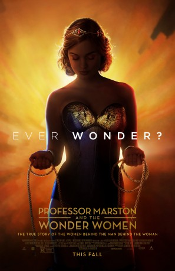
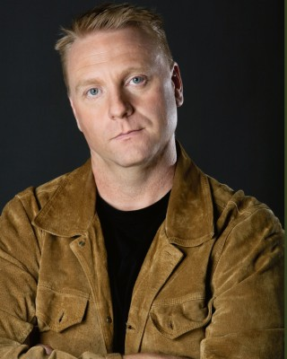

#8340 Professor Marston and the Wonder Women
 gesehen am 28.02.2018
gesehen am 28.02.2018
 
 IMDB-Wertung: 7.1 / 10
IMDB-Wertung: 7.1 / 10  Metascore: 68
Metascore: 68 
Details the unconventional life of Dr. William Marston, the Harvard psychologist and inventor who helped invent the modern lie detector test and created Wonder Woman in 1941. Marston was in a polyamorous relationship with his wife Elizabeth, a psychologist and inventor in her own right, and Olive Byrne, a former student who became an academic. This relationship was key to the creation of Wonder Woman, as Elizabeth and Olive's feminist ideals were ingrained in the character from her creation. Marston died of skin cancer in 1947, but Elizabeth and Olive remained a couple and raised their and Marston's children together. The film is said to focus on how Marston dealt with the controversy surrounding Wonder Woman's creation.
Jahr: 2017
Dauer: 108 Minuten
FSK: 12
Land: USA Studio: Annapurna PicturesTonspuren: DD5.1 - ,
Untertitel: Deutsch, Englisch,
Auflösung: 1080p (1920x808) Größe: 8140 MB
Genre: Drama, Biographie
Regisseur: Angela Robinson
Drehbuch: Angela Robinson
Soundtrack: Tom Howe
Darsteller:
 Luke Evans als William Moulton Marston
Luke Evans als William Moulton Marston Rebecca Hall als Elizabeth Marston
Rebecca Hall als Elizabeth Marston Bella Heathcote als Olive Byrne
Bella Heathcote als Olive Byrne Connie Britton als Josette Frank
Connie Britton als Josette Frank- Monica Giordano als Mary
 JJ Feild als Charles Guyette
JJ Feild als Charles Guyette- Chris Conroy als Brant Gregory
 Oliver Platt als M.C. Gaines
Oliver Platt als M.C. Gaines Maggie Castle als Dorothy Roubicek
Maggie Castle als Dorothy Roubicek Alexa Havins als Molly Stewart
Alexa Havins als Molly Stewart- Allie Gallerani als Sara
-  Christopher Jon Gombos als Fred Stewart
- Gabriella Nail als Student
 Frank Ridley als Manager
Frank Ridley als Manager Ken Cheeseman als Dean Liddy
Ken Cheeseman als Dean Liddy Tom Kemp als Harry Peter
Tom Kemp als Harry Peter- Christopher Paul Richards als Teen Donn
- Lucinda Clare als Theater Performer
- Chris Banks als Harvard Student (uncredited)
- Scott Bannister als Injured Soldier (uncredited)
- Caitlin Batts als Comic Reading Girl (uncredited)
- Joe Cali als Reporter (uncredited)
- Ryan Canale als Comic Book Kid (uncredited)
- Gavin Earle als Comic Book Kid (uncredited)
 Larry Eudene als Reporter (uncredited)
Larry Eudene als Reporter (uncredited)- Kristen Anne Ferraro als Hospital Visitor (uncredited)
 Pamela Figueiredo als Radcliffe Student (uncredited)
Pamela Figueiredo als Radcliffe Student (uncredited)- Olivia Filleti als Radcliffe Student (uncredited)
 London Hall als Nurse (uncredited)
London Hall als Nurse (uncredited)- Ian Dylan Hunt als Reporter (uncredited)
- Melissa Jalali als Sorority Sister (uncredited)
 Bobby Kenney als Photographer (uncredited)
Bobby Kenney als Photographer (uncredited)- Ally Looney als Neighbor (uncredited)
- Allie Marshall als Senior Sorority Sister (uncredited)
- Acei Martin als Radcliffe Student / Sorority Sister (uncredited)
- Clara McKay als Radcliffe Student (uncredited)
- Kasey Murray als Olive Ann Marston (uncredited)
- Anthony Pelton als Reporter (uncredited)
- Logan Raposo als College Student (uncredited)
- Lexie Roth als Theatre Student (uncredited)
- Paul Taft als Elizabeth's Boss (uncredited)
- Sharon Kubo als Kate
- Forry Buckingham als Doctor
- Stacy Fischer als Linda
- Sebastian Wood als Teen Son
- Nicholas Dias als Young Son
- Nicholas Bohling als College Student (uncredited)
- Alexa Cahill als Freshman Pledge (uncredited)
- Zada Clarke als Sorority Sister (uncredited)
- Stevie Costa als Reporter (uncredited)
Datei: X:\2017(N-Z)\Professor Marston and the Wonder Women (2017, FSK12, 1920x808).mkv seit 26.02.2018
Festplatte: HD 2017(A-Z)-2018(A-F)
 Es gibt insgesamt 170 Filme in der Gruppe '2017(N-Z)'
Es gibt insgesamt 170 Filme in der Gruppe '2017(N-Z)'